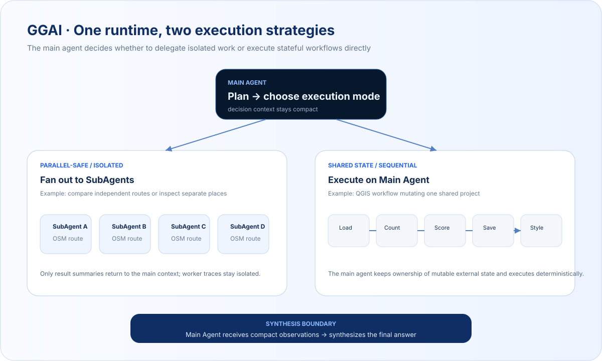
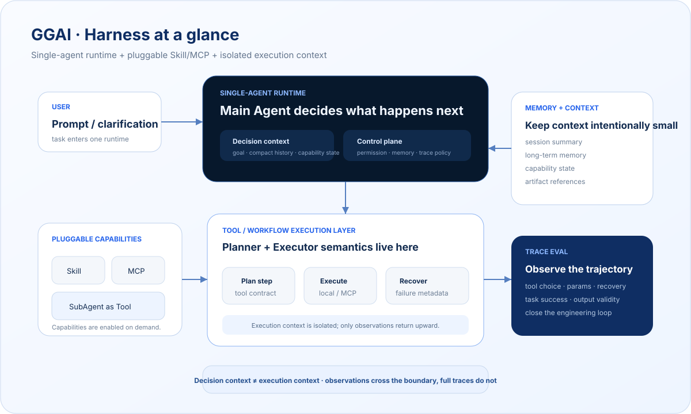
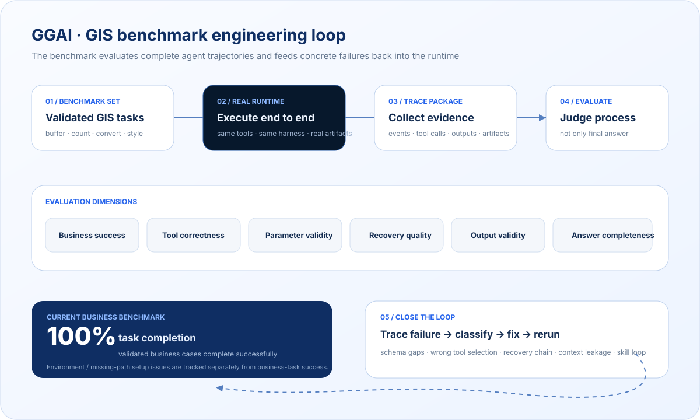

GGAI
生产级通用地理 Agent 系统：以单 Agent Runtime 为核心，通过可插拔 Skill/MCP 扩展 QGIS、本地路线规划、OpenStreet、人流与灾害分析等领域能力；需要时把 SubAgent 当作工具派发，同时用 Trace Eval 驱动可靠性迭代。
- Role
- 设计负责人
- Period
- 2026.04 – 至今
- Focus
- Single-Agent Runtime · Skill/MCP · SubAgent · Eval
- System
- PocketFlow · QueryEngine · Tool Orchestrator
One runtime, different execution strategies.
GGAI 不把“多 Agent”当作默认答案。主 Agent 先判断任务是否真正适合拆分：独立、无共享状态的任务可以派发多个 SubAgent 并行完成；会连续修改同一个外部状态的工作流，则保持在主 Agent 内顺序执行。SubAgent 是工具能力，不是第二套 Runtime。

A restrained harness around a single agent.
GGAI 把 Planner、Executor 的复杂度更多沉到工具与工作流层，而不是让主 Agent 长期持有一份越来越大的流程上下文。Runtime 负责决策、状态和控制；Skill/MCP 提供可插拔能力；工具执行层维护具体执行上下文；Memory 和 Trace Eval 分别负责长期信息与可观测性。

Designing the harness around the model.
- 01
Runtime 架构重构
将系统从领域 Agent 调整为通用 Agent Runtime，把领域能力下沉到 Skill 与 MCP，避免通用运行时被业务逻辑污染，并为后续扩展建立稳定边界。
- 02
QueryEngine / Context Engineering
参与设计消息构造、系统提示拼装、历史消息、Skill/MCP 状态、Memory 与压缩上下文管理，让模型在长链路执行中获得可控、可追踪的决策上下文。
- 03
Tool Orchestrator
统一本地工具与 MCP 工具调用，支持参数 schema 校验、工具执行、失败识别与 recovery metadata 生成，让工具层具备一致的执行与恢复语义。
- 04
Skill / MCP 可插拔体系
支持用户手动启用 local-route、openstreet、qgis、workspace 等自定义 Skill/MCP，在保持领域隔离的同时控制工具可见性与能力边界。
- 05
SubAgent as Tool
把 SubAgent 纳入主 Agent 工具空间，只在任务独立、状态可隔离时派发；SubAgent 内部 trace 不直接污染主 Agent 上下文，结果以摘要边界回流。
- 06
Trace-level Eval
基于完整 Agent Trace 评估任务成功、工具选择、参数合法性、恢复和最终输出，并用 LLM-as-Judge 把失败定位到具体执行环节。
Close the loop with a real business benchmark.
在 GIS/QGIS 业务场景中，GGAI 的测试不只检查最终答案，而是让 benchmark 任务走完整生产 Runtime：执行真实工具、产出真实文件、保存 Trace 与 Artifact，再从业务成功、工具正确性、参数合法性、恢复质量和输出有效性等维度进行评估。

Benchmark 的价值不是做一张高分报表，而是把每次失败转成可修复的问题类型：schema 缺字段、工具误选、恢复链过长、Skill loop、上下文泄漏等，再通过修复与 rerun 关闭工程闭环。